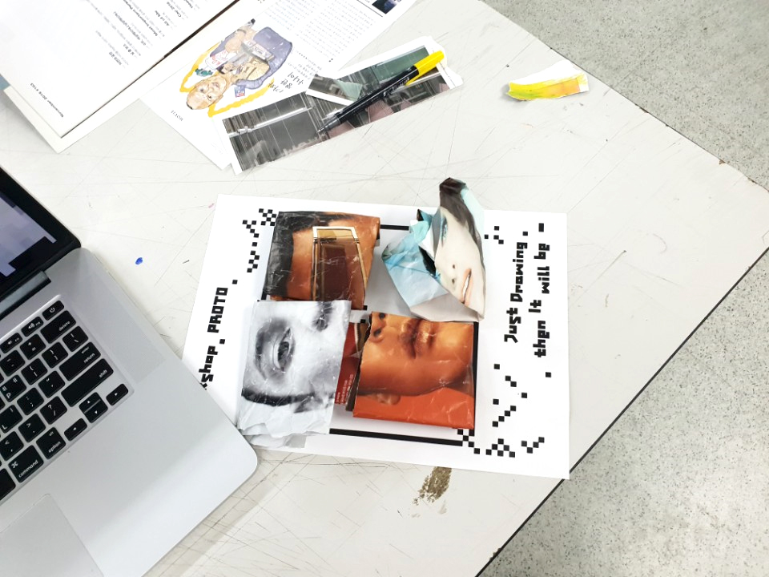
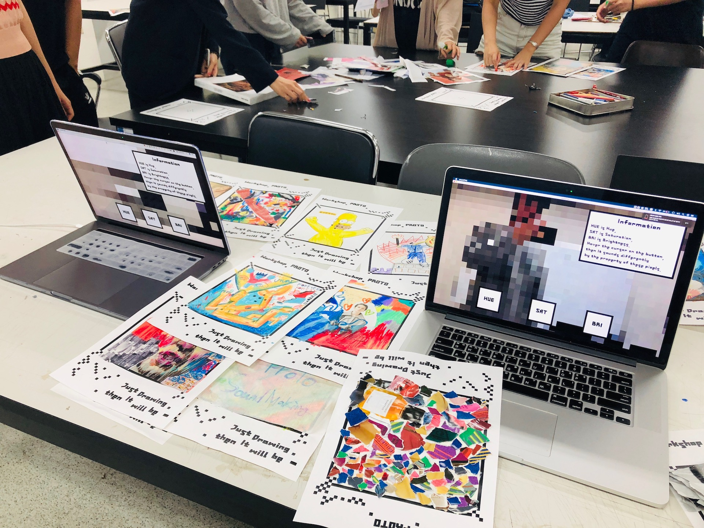
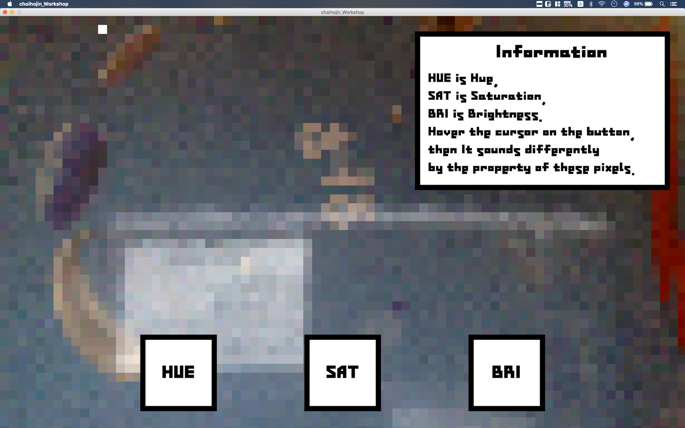
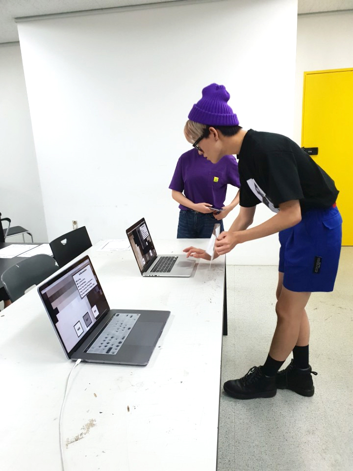
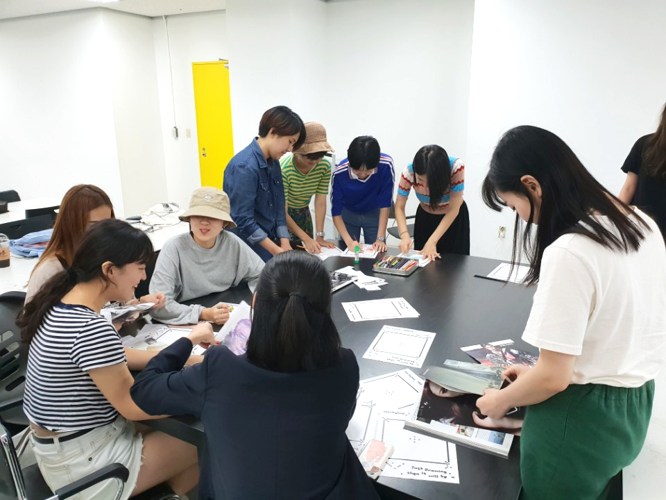
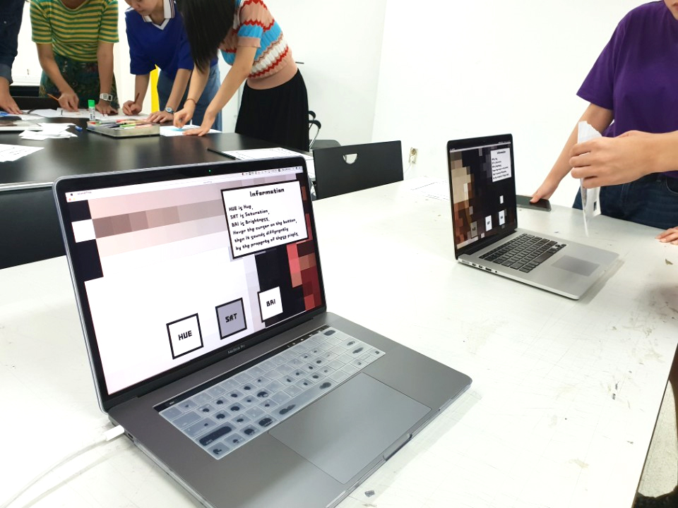
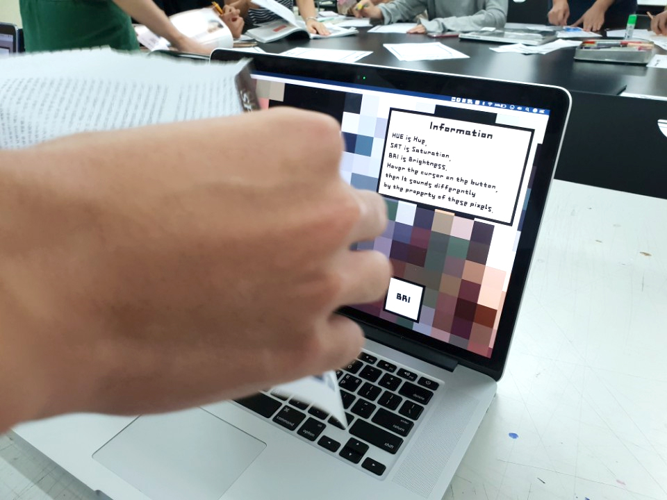
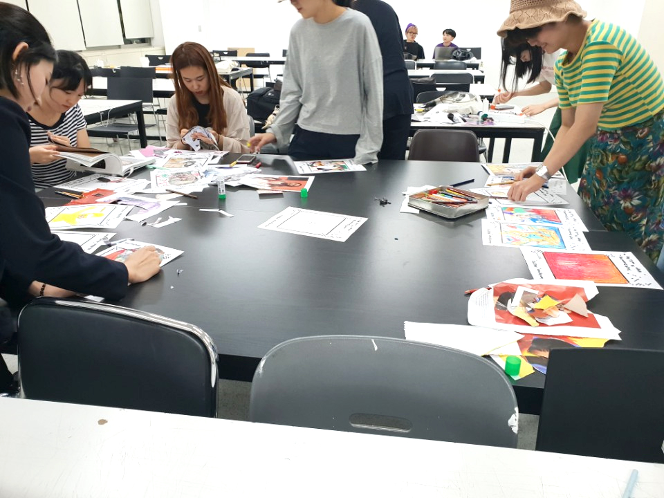
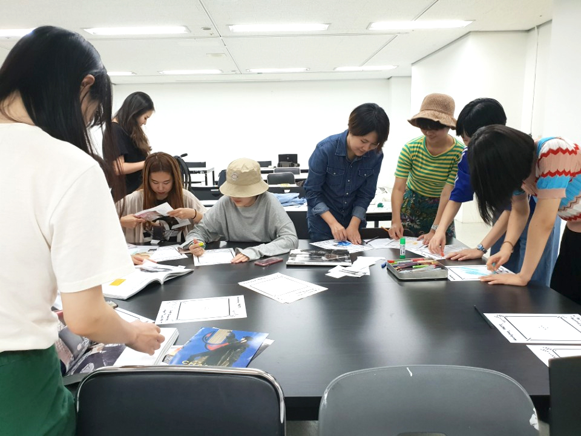

👋
홍익대학교 시각디자인과 뉴미디어, HCI 소모임 PROTO입니다. 2017년 한글꼴연구회 회원님들과 함께 한 《Hyperlink 展, 2017》을 시작으로 올 해에도 홍문관 7층에 PROTO 회원님들의 작품을 펼칩니다.
PROTO에서는 코딩을 통해 다양한 매체, 인터랙션 작품을 시도하고 있습니다. 이번 《리듬, 멜로디, 하모니 展, 2018》에서는 '청각'을 주제로 다양한 인터랙션과 뉴미디어 작품을 선보이고자
합니다.

🖼️
작품을 감상하시려면 클릭하세요.
퍼플 레인 — 고지우
2018 여름의 재생목록 — 곽승현 1 2 3
프로통 1호 — 김단하
직관 — 김대섭
🚧음악시각감상장치 — 김승언
레트로 뉴 스페이스 — 김주은
당신의 영화 — 이소림
서울: 리듬, 멜로디, 하모니 — 이한들
오로라 — 이현서 1 2 3 4
소음의 심상 — 장효민
기억 — 정유경
낭만고양이 — 조예원
현기증 — 최호진
🔨Workshop #02,
< Image to Sound>
이번 워크샵의 결과물은, 각자가 만들어낸 이미지가 사운드로 출력되는 모습을 보여주는 것이다. 이미지라 함은 그림이어도 좋고, 사진이어도 좋고, 심지어 우리가 움직이는 하나하나의 프레임이어도 좋다.
Hue(색), Saturation(채도), Brightness(밝기)에 따라 각 픽셀을 읽고, 이는 Pitch를 결정하여 랜덤한 사운드로 변환이 된다. 개별의 음은 아름답지는 않을 지라도, 하지만 이들이 모여서 만들어낸
소리는, 결국 화음, 멜로디가 될 것이다.









ℹ️
전시 기간
2018년 10월 1일 ~ 10월 5일
전시 장소
R동 7층 서쪽 복도
운영팀
+82)10.4171.7894
hiuproto@gmail.com
👋
We are PROTO, the new media and HCI club of Hongik University’s visual communication design major. Starting from « Hyperlink Exhibit, 2017 » with Hangeulggol, again this year we present our members’ work on the 7th Building R of Hongmun.
PROTO is making an attempt to deviate from conventional paradigm of exhibition to try diverse medium and interaction in our works. In this year’s « Rhythm, Melody, Harmony Exhibit, 2018 » we are displaying diverse interaction and new
media works in the subject of ‘auditory’.
🖼️
Click to browse.
Purple rain — Jiwoo Koh
2018 Summer Playlist — Seunghyun Kwak 1 2 3
Protong Vol.1 — Danha Kim
🚧Intuition — Daeseob Kim
🚧Visualizing music device — Seung-eon Kim
RETRO NEW SPACE — Jueun Kim
Your movie — Sorim Lee
Seoul: Rhythm, Melody, Harmony — Handeul Lee
Aurora — Hyeonseo Lee 1 2 3 4
imagery of noise — Hyomin Chang
my loving city! — Yukyung Jung
Meow — Yewon Cho
🚧Vertigo — Hojin Choi
🔨Workshop #02,
< Image to Sound>
The results of the workshop are sounds realized by everyone's images. The images consist of paintings, photos, and camera feeds from the front webcam.
The program interprets hue, saturation, and brightness of each pixel and translates the data into sound. Although potentially chaotic at first, eventually the collection of the sounds will become rhythm, melody, harmony.
ℹ️
Date
Oct 1, ~ Oct 5, 2018
Location
Building R 7F West
HQ
+82.10.4171.7894
hiuproto@gmail.com